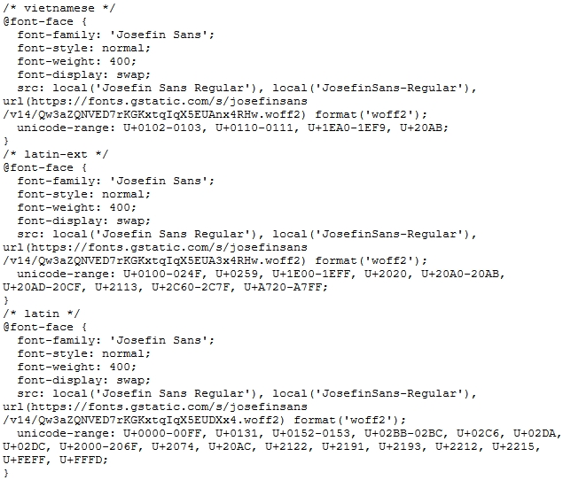

how to use google fonts
published 2019/09/29
introduction
fonts are considered a render-blocking resource and can cause substantial time increases in a page's load time dependent on its configuration. by choosing google to host your fonts, it helps to remove some of the headaches that can come along with configuration and thus, has understandably become common for developers to reach for during development. many people do not understand exactly what is happening in the background, and in this blog post i intend to provide a high-level overview.
google fonts api
when you want to use the google api, you will be provided with code similar to the following:
<link
href="https://fonts.googleapis.com/css?family=josefin+sans&display=swap"
rel="stylesheet"
/>
or
<style>
@import url('https://fonts.googleapis.com/css?family=josefin+sans&display=swap');
</style>
be aware that the above does not contain a direct url to the font file, but is in-fact a link to a customised,
browser
specific stylesheet.
there are two ways to import google fonts, of which a
<link>
header is the preferred method as this allows the server to point an interested client to another
resource without actually
touching the resource in question. href="" defines the link to
the resource,
and rel=""
defines the relation type.
the @import method should be avoided as it blocks parallel downloads.
how is the stylesheet dynamic?
google first detects the users browser and then delivers a custom stylesheet that determines the font format to be downloaded. for example, woff2 is not supported on ie11 while eot is, and in this instance, the user would be provided a stylesheet that would inform them to download the eot file format over woff.
where?
place the <link> element at the top of the .html page. the reason for doing this is that
browsers
parse html
line
by line and we want to ensure that the browser is aware of the google fonts resource, and begins to download
the stylesheet as soon as possible.
now what happens?
once the stylesheet has been downloaded, nothing will happen until the browser has also downloaded a piece of
css code - font-family: <font-name> - that indicates the font is to be used used,
and thus
needs to be
retrieved. this piece of css code can be within style.css or in-line. once confirmed, the browser will then
first search for the font locally, and then reach out to the specified url that was indicated in the
downloaded stylesheet. the next steps are dependent on the value set for the font-display
property, but in short, the
cssom tree will be
re-rendered to display the text with the specified font.

a faster way?
although there are benefits in having google dynamically create custom stylesheets per user, this
does increase the length of time that the user can download and render the font. this is
because by dynamically creating a custom stylsheet, the user first has to complete a dns lookup for the url
specified in the <link> tag, and then complete a http request to download the file. both of
these steps increase the time to render the font.
one solution is to host the font on your own server. by doing so myself, i managed to save
a dns lookup and http request to download the google specific stylesheet that would have taken ~1 second to
complete.
instead, i served the .woff2 font file on my own server, and added the required @font-face css
parameters to
style.css.
hosting your own fonts appears to be the better approach for new users visiting your website, but i am curious if this has real world positive implications. as google fonts are used by many websites there is a good chance that a user will have visited a website that has used my specified font in the past. will this said user be able to use a cached version of that font? as website cached files are now separated per website in modern browsers, would this even be possible?